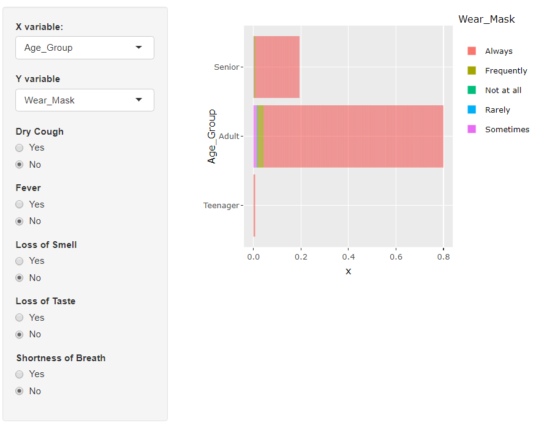
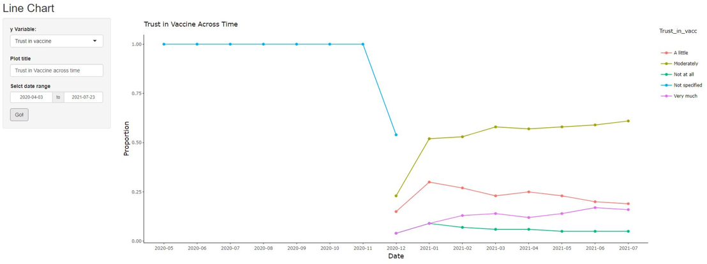
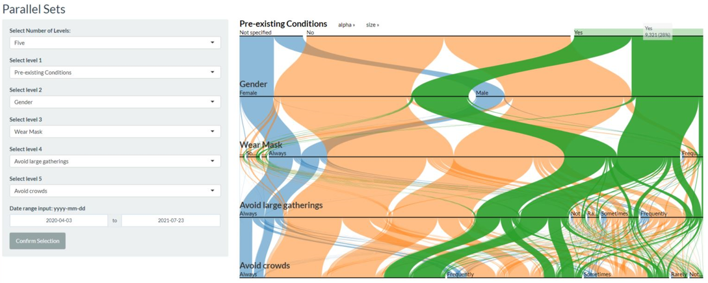

A Visual Discovery of Covid-19 Behaviours in Singapore
Andy YEO Chia Guan, ONG Chee Hong, Stella LOH Yun Jia

Introduction
With the onset of the Covid-19 pandemic since 2019, nations have been scrambling to gather as much data as possible on this novel virus. In a bid to contain the spread, nations have implemented various measures, with most of these approaches centered on the role of an individual to practice proper hygiene such as proper use of soap to wash their hands to wearing masks. Understanding how perceptions and behaviours have changed in critical in determining the success of Covid-19 measures. The dataset used in this application was taken from the Imperial College London YouGov Covid 19 Behaviour Tracker Data Hub.
Objectives
The team aims to create an interactive visualisation tool to enable exploratory data analysis to derive insights from the Covid 19 Behaviour data. Using this application, we aim to enable 1) Visualisation data of different levels of aggregation, with minimal technical knowledge required, 2) visualising trends and patterns among responses and 3) the ability to display detailed records on demand.
Approach
- Data Wrangling - Techniques such as the use of tidyverse was applied to the dataset to extract only the relevant information for the analysis from the large dataset consisting of 418 fields.
- Data Preparation - Some of the complex fields were transformed into multiple columns to facilitate analysis and derive better insights. Specifically, the “region” data field contained both the region and town information and hence was split into the two separate columns respectively.
- Data Exploration - Exploratory Data Analysis (EDA) was performed to explore the data using different variables and aggregation levels.
Exploratory Data Analysis (EDA)
Bar Chart
Bar charts present categorical data using rectangular bars with lengths proportional to the values that they represent. They are effective in helping users compare individual values to one another. They serve as a tool to visualize the proportion of the selected X to the selected Y variables. The example below shows the proportion of respondents by age group and the frequency which they wear masks outside of their homes.

Line Chart
Line charts display information as a series of data points connected by straight line segments. They are effective in their ability to show trends and patterns of change. Users are able to select which variable they wish to visualize. Furthermore, the interactive line chart allows users to isolate the responses they wish to view. Users can mouseover the plot to see the detailed proportion. In the below selection on trust in the vaccine plotted against time, we observe that the responses were improving over time after Dec’20, with an increase in trend on the positive responses, reaching a high of 77% in Jul’21.

Parallel Sets
The parallel sets shows the distribution between different categories at each level by displaying the flow-path. This application allows users to select between 3 to 5 levels of categories as well as the date range to filter the data.The width of the flow-path determines the density of the data which associates with the response in the category.

Future Works
Given the rapidly evolving pandemic landscape, data quickly becomes irrelevant. Hence, data needs to be constantly refreshed and updated for newer responses. The stored survey data can be replaced with real-time updated survey responses collected for the most up to date analysis and exploration to stay ahead of the curve.
The scope of the application can also be extended to cover a larger geographic area to incorporate comparison across multiple countries.
Additional interactive features can be added to the application, including the option for the user to compare one chart view against another so as to make comparisons easier, as the human mind may not be able to retain earlier views in memory.